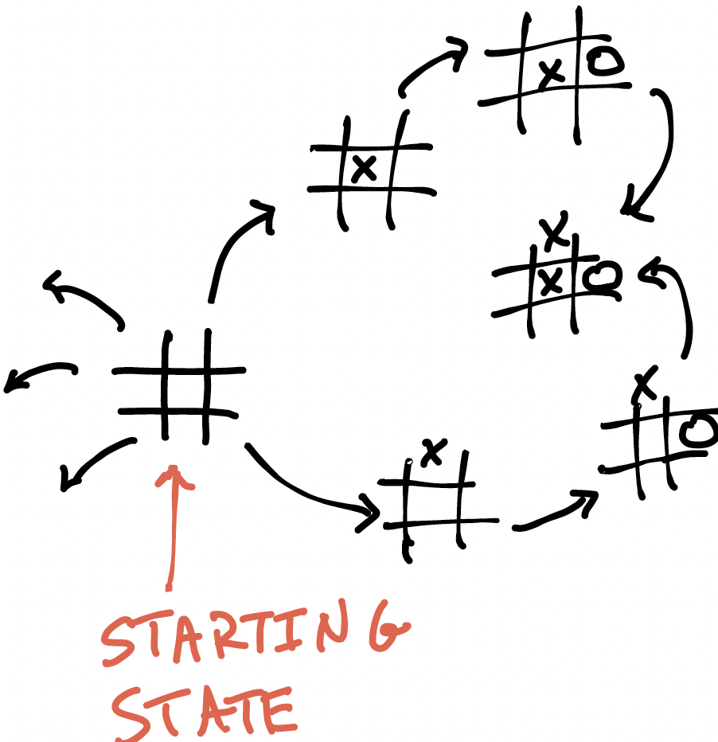
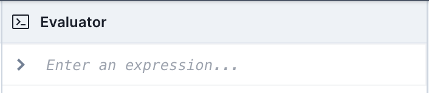
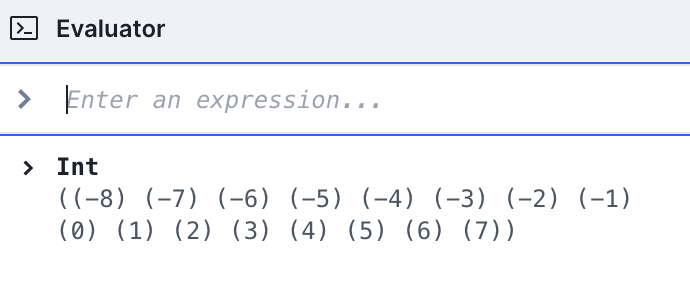

Transitions, Traces, and Verification
From Boards to Games¶
Now that we've gotten some experience modeling in Forge, let's start thinking about change.
What do you think a game of tic-tac-toe looks like? Crucially, a game involves moves.
Exercise: How could we model the moves between board states? (Hint: start thinking in terms of a graph—nodes and edges!)
Think, then click!
It's often convenient to use the following idiom.
Think of the game as a big graph, where the nodes are the states (possible board configurations) and the edges are transitions between states (in this case, legal moves of the game). Here's a rough sketch:

A game of tic-tac-toe is a sequence of steps in a state graph, starting from the empty board. Let's model it.
First, what does a move look like? A player puts their mark at a specific location. In Forge, we'll represent this using a transition predicate: a predicate that says when it's legal for one state to evolve into another. We'll often call these the pre-state and post-state of the transition:
What constraints should we add? It's useful to divide a transition predicate into:
- a guard, which allows the move only if the pre-state is suitable; and
- an action, which defines what is in the post-state based on the pre-state and the move parameters.
For the guard, in order for the move to be valid, it must hold that in the pre-state:
- nobody has already moved at the target location; and
- it's the moving player's turn.
For the action:
- the new board is the same as the old, except for the addition of the player's mark at the target location.
Now we can fill in the predicate. Let's try something like this:
pred move[pre: Board, row: Int, col: Int, p: Player, post: Board] {
-- guard:
no pre.board[row][col] -- nobody's moved there yet
p = X implies XTurn[pre] -- appropriate turn
p = O implies OTurn[pre]
-- action:
post.board[row][col] = p
all row2: Int, col2: Int | (row!=row2 and col!=col2) implies {
post.board[row2][col2] = pre.board[row2][col2]
}
}
There are many ways to write this predicate. However, we're going to stick with this general form because it calls out an important point. Suppose we had only written post.board[row][col] = p for the action, without the all on the next following lines. Those added lines, which we'll call a frame condition, say that all other squares remain unchanged; without them, the contents of any other square might change in any way. Leaving them out would cause an underconstraint bug: the predicate would be too weak to accurately describe moves in tic-tac-toe. But that's not the only source of problems...
Exercise: Could there be a bug in this predicate? (Run Forge and find out!)
Think, then click
The all row2... formula says that for any board location where both the row and column differ from the move's, the board remains the same. But is that what we really wanted? Suppose X moves at location 1, 1. Then of the 9 locations, which is actually protected?
| Row | Column | Protected? |
|---|---|---|
| 0 | 0 | yes |
| 0 | 1 | no (column 1 = column 1) |
| 0 | 2 | yes |
| 1 | 0 | no (row 1 = row 1) |
| 1 | 1 | no (as intended) |
| 1 | 2 | no (row 1 = row 1) |
| 2 | 0 | yes |
| 2 | 1 | no (column 1 = column 1) |
| 2 | 2 | yes |
Our frame condition was too weak! We need to have it take effect whenever either the row or column is different. Something like this will work:
Exercise: Make the suggested fix to the predicate above. Comment out the 3 frame-condition lines and run the model. Do you see moves where the other 8 squares change arbitrarily? You should, because Forge is free to make such changes.
Property Preservation¶
Once someone wins a game, does their win still persist, even if more moves are made? I'd like to think so: moves never get undone, and in our model winning just means the existence of 3-in-a-row for some player. We probably even believe this property without checking it. However, it won't always be so straightforward to show that properties are preserved by the system. We'll check this one in Forge as an example of how you might prove something similar in a more complex system.
Looking ahead
This is our first step into the world of verification. Asking whether or not a program, algorithm, or other system always satisfies some assertion is a core problem in engineering, and has a centuries-long history.
We'll tell Forge to find us pairs of states, connected by a move: the pre-state before the move, and the post-state after it. That's any potential transition in tic-tac-toe—at least, following the rules as we defined them. To apply this technique, all we need to do is add two more constraints that reflect a winner existing in the pre-state, but that there's no winner in the post-state.
pred winningPreservedCounterexample {
-- There is some pair of states
some pre, post: Board | {
-- such that the first transitions to the second
some row, col: Int, p: Player |
move[pre, post, row, col, p]
-- the first state has a winner
some p: Player | winner[pre, p]
-- the second state has no winner
all o: Player | not winner[post, p]
}
}
run {
all s: Board | wellformed[s]
winningPreservedCounterexample
}
The run is unsatisfiable. Forge can't find any counterexamples. We'll see this reported as "UNSAT" (short for "unsatisfiable") in the visualizer.
Next button
Remember that the visualizer also has a "Next" button; you can browse many different solution instances. Of course, if you press it enough times, Forge (eventually) runs out of solutions to show.
Generating Complete Games¶
Recall that our worldview for this model is that systems transition between states, and thus we can think of a system as a directed graph. If the transitions have arguments, we'll sometimes label the edges of the graph with those arguments. This view is sometimes called a discrete event model, because one event happens at a time. Here, the events are moves of the game. In a bigger model, there might be many different types of events.
Today, we'll ask Forge to find us full traces of the system, starting from an initial state. We'll also add a Game sig to incorporate some metadata.
-- Generate *one* game of tic-tac-toe
one sig Game {
-- What state does the game start in?
initialState: one Board,
-- How does the game evolve from state to state?
nextState: pfunc Board -> Board
}
pred traces {
-- The trace starts with an initial state
starting[Game.initialState]
no sprev: Board | Game.nextState[sprev] = Game.initialState
-- Every transition is a valid move
all s: Board | some Game.nextState[s] implies {
some row, col: Int, p: Player |
move[s, row, col, p, Game.nextState[s]]
}
}
By itself, this wouldn't be quite enough; we might see a bunch of disjoint traces. We could add more constraints manually, but there's a better option: tell Forge, at runtime, that nextState represents a linear ordering on states. This is similar to what we did back in the ripple-carry adder:
It's worth recalling what's happening here. The phrase nextState is linear isn't a constraint; it's a separate annotation given to Forge alongside a run or a test. Never put such an annotation in a constraint block; Forge won't understand it. These annotations narrow Forge's bounds (the space of possible worlds to check) before the solver begins its work.
In general, Forge syntax allows such annotations after numeric bounds. E.g., if we wanted to see full games, rather than unfinished game prefixes (the default bound on any sig, including Board, is up to 4) we could have asked:
You might notice that because of this, some traces are excluded. That's because nextState is linear forces exact bounds on Board. This is in contrast to plinear, which we used for the ripple-carry adder, and which didn't force exact bounds. Use whichever of the two is more appropriate to your needs.
The Evaluator¶
Moreover, since we're now viewing a single fixed instance, we can evaluate Forge expressions in it. This is great for debugging, but also for just understanding Forge a little bit better. Open the evaluator here at the bottom of the right-side tray, under theming. Then enter an expression or constraint here:

Type in something like some s: Board | winner[s, X]. Forge should give you either #t (for true) or #f (for false) depending on whether the game includes X winning in some state.
Optimization¶
You might notice that this model takes a while to run. Something happened after we started reasoning about full games. Why might that be? Let's re-examine our bounds and see if there's anything we can adjust. In particular, here's what the evaluator says we've got for integers:

Wow---wait, do we really need to be able to count up to 7 for this model? Even more, do we really need to count all the way down to -8? Probably not. If we change our integer bounds to 3 Int we'll still be able to use 0, 1, and 2, and the search space is much smaller.
Back To Tic-Tac-Toe: Ending Games¶
Recall that we just ran this command:
Nothing without a command
Without a run, an example, or a similar command, running a Forge model will do nothing.
From this run command, Forge will find traces of the system (here, games of Tic-Tac-Toe) represented as a linear sequence of exactly 10 State atoms.
Do you have any worries about the way this is set up?
Think, then click!
Are all Tic-Tac-Toe games 10 states long?
Well, maybe; it depends on how we define a game. If we want a game to stop as soon as nobody can win, our exactly 10 State bound is going to prevent us from finding games that are won before the final cell of the board is filled.
Let's add the following guard constraint to the move transition predicate, which forces games to end as soon as somebody wins.
Now we've got problems, because once we add this constraint, Forge will omit games that end before all square of the board are filled.
This behavior, which may initially seem strange, exists for two reasons:
- History: Forge's ancestor language, Alloy, has something very similar to
is linear, with the same semantics. - Performance: since the
is linearannotation is almost always used for trace-generation, and trace-generation solving time grows (in the worst case) exponentially in the length of the trace, we will almost always want to reduce unnecessary uncertainty. Forcing the trace length to always be the same reduces the load on the solver, and makes trace-generation somewhat more efficient.
But now we need to work around this limitation. Any ideas? Hint: do we need to have only one kind of transition in our system?
Think, then click!
No. A common way to allow trace length to vary is by adding a "do nothing" transition. (In the literature, this is called a stutter transition.)
The trick is in how to add it without also allowing a "game" to consist of nobody doing anything. To do that requires some more careful modeling.
Let's add an additional transition that does nothing. We can't "do nothing" in the predicate body, though—an empty predicate body would just mean anything could happen. What we mean to say is that the state of the board remains the same, even if the before and after Board objects differ.
pred doNothing[pre: Board, post: Board] {
all row2: Int, col2: Int |
post.board[row2][col2] = pre.board[row2][col2]
}
Variable names
Remember that row2 and col2 are just variable names that could stand for any Int; they aren't necessarily the row or column index value 2.
We also need to edit the traces predicate to allow doNothing to take place:
pred traces {
-- The trace starts with an initial state
starting[Game.initialState]
no sprev: Board | Game.nextState[sprev] = Game.initialState
-- Every transition is a valid move
all s: Board | some Game.nextState[s] implies {
some row, col: Int, p: Player | {
move[s, row, col, p, Game.nextState[s]]
}
or
doNothing[s, Game.nextState[s]]
}
}
As it stands, this fix solves the overconstraint problem of never seeing an early win, but introduces a new underconstraint problem: we don't want doNothing transitions to happen just anywhere!
Here's how I like to fix it:
Why a new predicate? Because I want to use different predicates to represent different concepts, and enable re-use.
When should a doNothing transition be possible? Only when the game is over!
pred doNothing[pre: State, post: State] {
gameOver[pre] -- guard of the transition
pre.board = post.board -- effect of the transition
}
If we wanted to, we could add a not gameOver[pre] guard constraint to the move predicate, enforcing that nobody can move at all after someone has won.
Do The Rules Allow Cheating?¶
Let's ask Forge whether a cheating state is possible under the rules.
pred cheating[b: Board] {
-- It's neither X's nor O's turn; the balance is way off!
not XTurn[b]
not OTurn[b]
}
run {
wellformed
traces
some bad: Board | cheating[bad]
} for exactly 10 State for {next is linear}
This should work—assuming we don't drop the is linear annotation. Without it, nothing says that every state must be in the trace, and so Forge could produce an instance with an "unused" cheating state that's not reachable from the start.
Checking Conjectures¶
When I was very small, I thought that moving in the middle of the board would guarantee a win at Tic-Tac-Toe. Now I know that isn't true. Could I have used Forge to check my conjecture?
Think, then Click!
Here's how I did it:
run {
wellformed
traces
-- "let" lets us locally define an expression, which can
-- be good for clarity in the model!
-- here we say that X first moved in the middle
let second = Game.nextState[Game.initialState] |
second.board[1][1] = X
-- ...but X didn't win
all s: State | not winner[s, X]
} for exactly 10 State for {nextState is linear}
We should get a counterexample if we run that predicate.
We could also write this using an assertion (which would fail) rather than a run:
pred xWins {
all s: State | not winner[s, X]
}
assert moveInMiddle is sufficient for xWins
for exactly 10 State for {nextState is linear}
You might wonder how assert can be used for predicates that take arguments. For example, suppose we had defined wellformed to take a board, rather than quantifying over all boards in its body. The assert syntax can take (one layer of) quantification. Would move preserve wellformed-ness?
Here's how we'd write that. Notice we don't even need to use the Game here (and thus don't need to give the is linear annotation)! We're just asking Forge about 2 boards at a time:
pred someMoveFromWF[pre, post: Board] {
wellformed[pre]
some r, c: Int, p: Player | move[pre, r, c, p, post]
}
assert all pre,post: Board | move[pre,post] is sufficient for wellformed[post]
Reminder: The Evaluator¶
If you're viewing an instance, you can always select the evaluator tray and enter Forge syntax to see what it evaluates to in the instance shown. You can enter both formulas and expressions. We also have the ability to refer to atoms in the world directly. E.g., we could try:
but also (assuming Board0 is an atom in the instance we're currently viewing):
Going Further¶
This illustrates a new class of queries we can ask Forge. Given parties following certain strategies, is it possible to find a trace where one strategy fails to succeed vs. another?
Challenge exercise: Write a run that searches for a game where both parties always block immediate wins by their opponent. Is it ever possible for one party to win, if both will act to prevent a 3-in-a-row on the next turn?
Modeling Tip: Dealing with Unsatisfiability¶
Overconstraint bugs, where some instances may be unintentionally ruled out by our model, can be a nightmare to detect and fix. Maybe you wrote an assert and it seemed to never stop. Maybe you wrote a run command and Forge just produced an UNSAT result—after a long wait.
Getting back an unsat result can take a long time. Why? Think of the search process. If there is a satisfying instance, the solver can find it early. If there isn't, the solver needs to explore the entire space of possibilities. There are smart algorithms for this, and the solver is not really enumerating the entire space of instances, but the general idea holds.
So if you run Forge and it doesn't seem to ever terminate, it's not necessarily a Forge problem. Overconstraint bugs can produce this behavior, too.
So, how do you debug a problem like this? The first thing I like to do is reduce the bounds (if possible) and, if I still get unsat, I'll use that smaller, faster run to debug. But at that point, we're kind of stuck. UNSAT isn't very helpful.
Today I want to show you a very useful technique for discovering the problem. There are more advanced approaches we'll get to later in the course, but for now this one should serve you well.
Unsatisfiable Cores
When a run can't be satisfied, it's possible to get the solver to give us a bit of help. This requires changing some of the Forge options, so we'll come back to this later. For now, we'll focus on the more directed debugging below.
The idea is: encode an instance you'd expect to see as a set of constraints, run those constraints only, and then use the evaluator to explore why it fails your other constraints. Let's do an example! We'll look at something other than tic-tac-toe for this, because it's a real problem that came up for me in class.
#lang froglet
sig State {
top: lone Element
}
sig Element {
next: lone Element
}
pred buggy {
all s: State | all e: Element {
s.top = e or reachable[e, s.top, next]
}
some st1, st2: State | st1.top != st2.top
all e: Element | not reachable[e, e, next]
}
test expect {
exampleDebug: {buggy} is sat
}
This test fails. But why?
run {
some st1, st2: State |
some ele1, ele2: Element | {
st1.top = ele1
st2.top = ele2
ele1.next = ele2
no ele2.next
}
} for exactly 2 State, exactly 2 Element
Given this instance, the question is: why didn't Forge accept it? There must be some constraint, or constraints, that it violates. Let's find out which one. We'll paste them into the evaluator...
* some st1, st2: State | st1.top != st2.top? This evaluates to #t (true). No problem there.
* all s: State | all e: Element {
s.top = e or reachable[e, s.top, next]
}? This evaluates to #f (false). So this is a problem.
Now we proceed by breaking down the constraint. The outer shell is an all, so let's plug in a concrete value:
all e: Element { State0.top = e or reachable[e, State0.top, next] }? This evaluates to#f. So the constraint fails forState0.
Important: Don't try to name specific states in your model. They don't exist at that point.
Which element does the constraint fail on? Again, we'll substitute concrete values and experiment:
State0.top = Element0 or reachable[Element0, State0.top, next]? This evaluates to#t. What aboutState0.top = Element1 or reachable[Element1, State0.top, next]?
Following this process very often leads to discovering an over-constraint bug, or a misconception the author had about the goals of the model or the meaning of the constraints.
Question: What's the problem here?
Think, then click!
Since the next field never changes with time, the all constraint doesn't allow states to vary the top of the stack. Instead, we need a weaker constraint to enforce that the stack is shaped like a state.
Aside: Reminder About Examples¶
Where an assert or run is about checking satisfiability or unsatisfiability of some set of constraints, an example is about whether a specific instance satisfies a given predicate. This style of test can be extremely useful for checking that (e.g.) small helper predicates do what you expect.
Why use example at all? A couple of reasons:
- It is often much more convenient (once you get past the odd syntax) than adding
one sigs orsomequantification for every object in the instance, provided you're trying to describe an instance rather than a property that defines a set of them---which becomes a better option as models become more complex. - Because of how it's compiled, an
examplecan sometimes run faster than a constraint-based equivalent.
You may be wondering whether there's a way to leverage that same speedup in a run command. Yes, there is! But for now, let's get used to the syntax just for writing examples. Here are some, well, examples:
pred someXTurn {some s: State | XTurn[s]}
example emptyBoardXturn is {someXTurn} for {
State = `State0
no `State0.board
}
Here, we've said that there is one state in the instance, and its board field has no entries. We could have also just written no board, and it would have worked the same.
-- You need to define all the sigs that you'll use values from
pred someOTurn {some b: Board | OTurn[b]}
example xMiddleOturn is {someOTurn} for {
Board = `Board0
Player = `X0 + `O0
X = `X0
O = `O0
`Board0.board = (1, 1) -> `X0
}
What about assertions, though? You can think of assertions as generalizing examples. I could have written something like this:
pred someXTurn {some b: Board | xturn[b]}
pred emptySingleBoard {
one b: Board | true
all b: Board, r,c: Int | no b.board[r][c]
}
assert emptySingleBoard is sufficient for someXTurn
That's pretty coarse-grained, though. So let's write it in a better way:
pred emptyBoard[b: Board] { all r, c: Int | no b.board[r][c] }
assert all b: Board | emptyBoard[b] is sufficient for xturn[b]
Notice how, by adding variables to the assertion, we're able to write less-verbose assertions and re-use our predicates better.
But if examples are faster, why use assertions?
First, examples aren't always faster. There are also some models we'll write later where example isn't supported. And, of course, as the model becomes more complex, the example becomes longer and longer as you try to define the value of all fields.
But there's a more important reason: assertions can express properties. Because they can state arbitrary constraints, there's an analogy to property-based testing: where examples are like traditional unit tests, assertions are like the checker predicates you wrote in Hypothesis.
So there's a role for both of them.
Traces: Good and Bad¶
We've finished our model of tic-tac-toe. We could generate a full game of up to 10 board states, and reason about what was possible in any game.
This works great for tic-tac-toe, and also in many other real verification settings. But there's a huge problem ahead. Think about verifying properties about a more complex system—one that didn't always stop after at most 9 steps. If we want to confirm that some bad condition can never be reached, how long a trace do we need to check?
Think, then click!
What's the longest (simple—i.e., no cycles) path in the transition system? That's the trace length we'd need.
That's potentially a lot of states in a trace. Hundreds, thousands, billions, ... So is this entire approach doomed from the start?
No, for at least two reasons:
- Often there are "shallow" bugs that can be encountered in only a few steps. In something like a protocol or algorithm, scaling to traces of length 10 or 20 can still find real bugs and increase confidence in correctness.
- There's more than one way to verify. Generating full traces wasn't the only technique we used to check properties of tic-tac-toe; let's look deeper at something we saw awhile back.
Proving Preservation Inductively¶
Let's turn to a programming problem. Suppose that we've just been asked to write the add method for a linked list class in Java. The code involves a start reference to the first node in the list, and every node has a next reference (which may be null).
Here's what we hope is a property of linked lists: the last node of a non-empty list always has null as its value for next.
How can we prove that our add method preserves this property, without generating traces of ever-increasing length? There's no limit to how long the list might get, and so the length of the longest path in the transition system is infinite: 0 nodes, 1 node, 2 nodes, 3 nodes,...
This might not be immediately obvious. After all, it's not as simple as asking Forge to run all s: State | last.next = none.
Exercise: Why not?
Think, then click!
Because that would just be asking Forge to find us instances full of good states. Really, we want a sort of higher-level all, something that says: "for all runs of the system, it's impossible for the run to contain a bad linked-list state.
This illustrates a central challenge in software and hardware verification. Given a discrete-event model of a system, how can we check whether all reachable states satisfy some property? You might have heard properties like this called invariants of the system.
One way to solve the problem without the limitation of bounded-length traces goes something like this:
- Step 1: Ask whether any starting states are bad states. If not, then at least we know that executions with no moves obey our invariant. (It's not much, but it's a start. It's also easy for Forge to check.)
- Step 2: Ask whether it's possible, in any good state, to transition to a bad state.
Consider what it means if both checks pass. We'd know that runs of length \(0\) cannot involve a bad state. And since we know that good states can't transition to bad states, runs of length \(1\) can't involve bad states either. And for the same reason, runs of length \(2\) can't involve bad states, nor games of length \(3\), and so on.
How do we write this in Forge?¶
This technique isn't only applicable in Forge. It's used in many other solver-based tools, including those used in industry. And modeling linked lists in Forge is very doable, but more complicated than I'd like to do at this point. So we'll demonstrate the idea on the tic-tac-toe model.
Step 1: are there any bad states that are also starting states?
Notice that we didn't need to use the next is linear annotation, because we're not asking for traces at all. We've also limited our scope to exactly 1 Board. We also don't need 4 integer bits; 3 suffices. This should be quite efficient. It should also pass, because the empty board isn't unbalanced.
Step 2: are there any transitions from a good state to a bad state?
Again, we don't need a full trace for this to work. We only need 2 boards: the pre-state and post-state of the transition:
pred moveFromBalanced[pre: Board, row, col: Int, p: Player, post: board] {
balanced[pre]
move[pre, row, col, p, post]
}
assert all pre, post: Board, row, col: Int, p: Player |
moveFromBalanced[pre, row, col, p, post] is sufficient for balanced[post]
for 2 Board, 3 Int
If both of these pass, we've just shown that bad states are impossible to reach via valid moves of the system.
Aside: Performance
That second step is still pretty slow on my laptop: around 10 or 11 seconds to yield UNSAT. Can we give the solver any help? Hint: is the set of possible values for pre bigger than it really needs to be?
Think, then click!
If we assume the pre board is well-formed, we'll exclude transitions involving invalid boards. There are a lot of these, even at 3 Int, since row and column indexes will range from -4 to 3 (inclusive). We could do this either by asserting wellformed[pre] or by refining the bounds we give Forge.